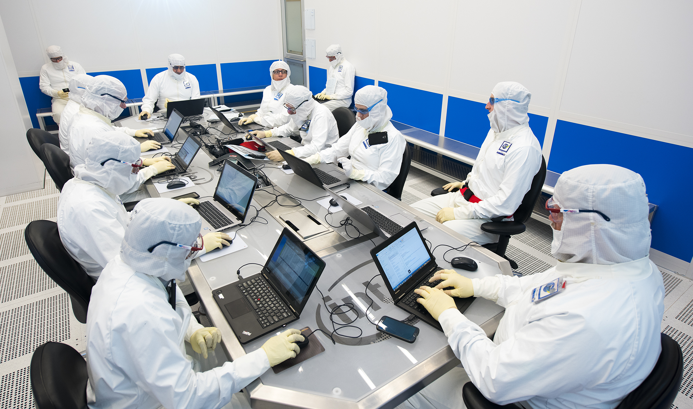

Sand is the basic element or key element from which CPU is made. But it’s not actually the sand but the silicon in it. Sand comprises 25 percent of silicon. Sand, especially quartz comprises a large amount of silicon in the form of SiO2. So silicon is the basic element from which we manufacture semiconductors.
After separating raw sand, and silicon, silicon is purified in multiple steps. After purification, it finally reaches a stage where it is ready for manufacturing the semiconductors. At this stage, we know the silicon as, “Electronic Grade Silicon”. The next phase is melting the Electronic Grade Silicon. After melting the silicon, it is given the shape of a mono-crystal. This mono-crystal is known as “Ingot”. An ingot weighs about 100 kgs and has a silicon of 99.9999%.
The ingot is sliced by a very thin and sharp saw into individual disks known as “Wafers” are obtained. There can be various sizes of these wafers depending on the requirements. The general size of the wafers is 300nm. After the wafers are cut, they polished until they have smooth mirror-like surfaces.
While the wafer is spinning at high speed, a blue photoresist liquid is poured over the wafer. Because of the high spinning of the wafer, a thin and consistent layer is deposited on its surface. Once the application of photoresist is completed, it exposes the wafer to UV light which performs a chemical reaction. The exposure is done using “masks”. These masks act as stencils while there’s a lens between the mask and the wafer. This lens reduces the image of the mask to a small focal point. By this, the size of the lens becomes four times smaller than that of the original one. This procedure is repeated several times in order to achieve a pattern similar to the mask’s pattern. The masks are used create different circuit patterns. The material of the surface of wafers becomes soluble after the exposure.
The soluble material on the surface is then dissolved and washed with a solvent. This exposes the patterns made the mask. Then, a chemical solvent is used for etching or partially dissolving the substrate part that was exposed. After etching, the photoresist layer is washed away by a similar process which reveals the desired engraved surface.
Before Ion doping, the wafers are again applied with photoresist and then washed off again. Then by ion implantation, the exposed areas of the silicon wafer are bombarded with ions. And they change how the silicon in these areas conduct the electricity. Once ion implantation is completed, the photoresist is removed and the area of ion doping appears to be green. After that, three holes are etched on the top insulation layer above the transistor. And these three holes are later filled in with copper to make up the connections of the transistor.
The silicon wafers are put into a copper sulfate solution so that only its top is exposed to it. And then on electroplating, copper ions are deposited on the surface of the wafer. Copper ions settle on the surface of the wafer forming a thin layer of copper. Then the excess material is washed off which leaves a very thin layer of copper. This makes up the whole transistor and after this, these transistors are connected by multiple layers. Various transistors are interconnected to each other according to the architecture and design of the particular CPU. This forms a complex circuitry which can have over 20 layers
In this step, the wafer is put through a functionality test. In this stage, the wafer is fed through some test patterns and the response is compared to the right answer. These tests determine the good functioning of wafers. Then these wafers are cut into small pieces called “dies”. The good ‘die’ means the die which gives the right answer passes the test and bad ‘dies’ are discarded. Passed dies go to the next step which is packaging.
In packaging, the substrate (an underlying layer), the ‘die’, and the heat spreader are placed together to form a complete processor. On the silver heat spreader, the cooling solution is applied which controls the heat of the processor. After this, there comes a final test where the CPU is tested at its maximum frequency. It was not until 80386, that the active cooling was required for the CPUs. Until then only ceramic top was used because the processors didn’t have enough computing power to generate enough heat. The modern processors generate so much heat that could melt themselves in a few seconds. That is the heat spreader is connected to a larger heat sink (and a fan) so they work for a longer time.
Though we can say that the CPU is ready but there is one final step which involves measuring its actual characteristics. Characteristics such as voltages, heat generation, frequency, operational characteristics of caches, etc are measured in binning. Best chips are binned as high-end chips with their full caches enabled. Whereas the chips which do not perform well are sold at their lower clock speeds model or as dual or triple core instead of their quad-core. Others might even have half of their cache disabled (celeron). Here the speeds and voltages are determined. For example, only 5% of the chips produced might operate at a speed of 3.2GHz while only 50% might operate on 2.8GHz. And finally, these tested and manufactured processors are ready to go off to the stores!